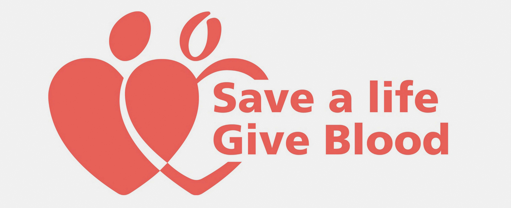

Welcome to BloodBook. This is a platform for finding blood in radius of few kilometers...
Home
Why Donate Blood?
Who Needs Blood?
Tips On Donation

LOGIN
REGISTER
Tips on blood donating
Please have a good meal at least 3 hours before donating blood.
Please accept the snacks offered after the donation. It is recommended to have a good meal later.
Please avoid smoking on the day before donating. One can smoke 3 hours after donation.
One is not eligible to donate blood if you have consumed alcohol 48 hours before donation.
Misconception about Donating Blood
will not feel drained or tired if you continue to drink fluids and have a good meal.
You can resume your normal activities after donating blood, though you are asked to refrain from exercise or heavy weight lifting for twelve hours after donation.
Donating blood will not leave you low of blood; in fact you will still have surplus blood after the donation.
While donating blood you will not feel any pain.
You will not faint or feel uncomfortable after donating blood. This is a common misconception.
You will not get AIDS if you donate blood.
Patients are just like donors - most of them have common blood types. Because your blood type is common, the demand for that type is greater than for rare types. So, even if your blood type is common there is still a requirement.